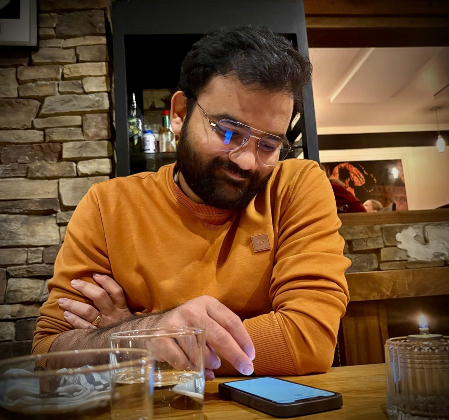

Hello!
I am an Assistant Professor in the Department of Mathematics at the Indian Institute of Technology Gandhinagar.
My research lies in Combinatorics and Graph Theory. I focus mainly on Algebraic Combinatorics, Spectral Graph Theory and Combinatorial Matrix Theory.
Before joining IIT Gandhinagar, I was a postdoctoral fellow at the University of Regina, working with Professors Shaun Fallat and Sandra Zilles. There I held a joint appointment in the Department of Mathematics and Statistics and the Department of Computer Science. Earlier, I was a PIMS postdoctoral fellow with Prof. Fallat.
I received my Ph.D. in Mathematics from the University of Delaware in 2023, advised by Prof. Sebastian Cioabă. Before that, I earned my M.S. in Mathematics from the Indian Institute of Science, Bangalore, advised by Prof. Arvind Ayyer.
CV · Google Scholar · ResearchGate · GitHub
Office: AB 5/348
Department of Mathematics, IIT Gandhinagar, Palaj, Gandhinagar, Gujarat 382355, India
Email: himanshugupta [at] iitgn [dot] ac [dot] in